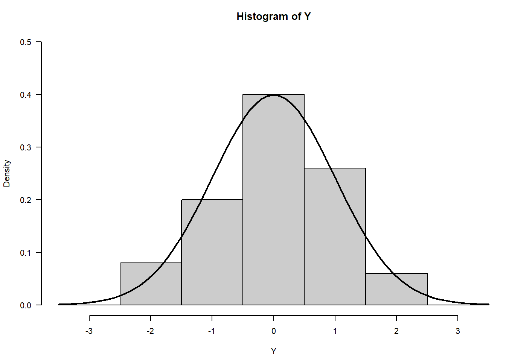

Assignment 2
1. Explore Paul Murrell’s R examples

Pressure (mm Hg) versus Temperature (Celsius)
Changing the pch changes the point style on the plot.


More Plots
Happy Planet Index
library(readr) library(tidyverse)
HPI <- read_csv(“HPDS02.csv”) HPI <- as.data.frame(HPI)
see column names
colnames(HPI)
rename columns
names(HPI)<-c(“country”, “ISO”, “year”, “cont”, “Pop”, “LiExp”, “wellbeing”, “EcoFP”, “HPI”, “BioCap”, “GDP”)
HPI_US <- as.data.frame(HPI) HPI_US <- HPI_US%>% filter(HPI_US$ISO==‘USA’)
HPI_KO <- as.data.frame(HPI) HPI_KO <- HPI_KO%>% filter(HPI_KO$ISO==‘KOR’)
library(forecast) HPI_US_ts <- ts(HPI_US\(HPI, frequency = 1, start = 2015) HPI_KO_ts <- ts(HPI_KO\)HPI, frequency = 1, start = 2015)
#Scatterplot ##### par(las=1, mar=c(5, 5, 2, 5), cex=.7) plot.new() plot.window(range(HPI_US\(year), range(HPI_US_ts)) lines(HPI_US\)year, HPI_US_ts) points(HPI_US$year, HPI_US_ts, pch=16, cex=2) par(col=“gray50”, fg=“gray50”, col.axis=“gray50”) axis(1, at=seq(2015, 2019, 1)) # Position, bottom axis(4, at=seq(37, 39, 0.5)) # Position, right
mtext(“Time (years)”, side=1, line=2.5, cex=0.8) mtext(“Happy Planet Index (out of 100)”, side=4, line=3, las=0, cex=0.8) #####
Histogram
HPI_19 <- as.data.frame(HPI) HPI_19 <- HPI_19%>% filter(year==2019)
par(las=1, mar=c(5, 2, 2, 5), cex=.7) plot.new() hist(HPI_19$LiExp, col=“gray80”, freq=TRUE, main=” “, xlab =” “, ylab =” “, yaxt=‘n’) axis(4, at=seq(0, 40, 10)) # Position, right mtext(”Life Expectancy (years)“, side=1, line=2.5, cex=0.8) mtext(”Distribution”, side=4, line=3, las=0, cex=0.8) #####
Boxplot
par(las=1, mar=c(5, 5, 2, 3), cex=.7) plot.new()
boxplot(HPI ~ GDP, data = HPI_19, subset=cont, col=“white”, xlab=““, ylab=”“)
mtext(“GPD per capita grouped by continent”, side=1, line=2.5, cex=0.8) mtext(“Happy Planet Index”, side=2, line=2.5,las=0, cex=0.8)
Pie Chart
HPI_19s <- HPI_19%>% filter()%>% select(cont, GDP, HPI, LiExp)
HPI_19s\(LiExp.col <- HPI_19s\)LiExp HPI_19s\(LiExp.col[HPI_19s\)LiExp.col <= 65] <- 3 HPI_19s\(LiExp.col[HPI_19s\)LiExp.col > 65 & HPI_19s\(LiExp.col <= 75] <- 2 HPI_19s\)LiExp.col[HPI_19s$LiExp.col > 75] <- 1
HPI_19s <- HPI_19s%>% arrange(LiExp.col)%>% count(LiExp.col)
HPI_19s\(LiExp.col[HPI_19s\)LiExp.col == 3] <- “Poor Life Expectancy” HPI_19s\(LiExp.col[HPI_19s\)LiExp.col == 2] <- “Average Life Expectancy” HPI_19s\(LiExp.col[HPI_19s\)LiExp.col == 1] <- “Good Life Expectancy”
par(mar=c(2, 2, 1, 2), xpd=FALSE, cex=0.5) pie(HPI_19s\(n, HPI_19s\)LiExp.col, col = gray(seq(0.3,1.0,length=3))) mtext(“Life Expectancy in 2019”, side=1, line=-3, cex=0.8) #####
:::{#quarto-navigation-envelope .hidden}
[Kaitlyn Zhang]{.hidden render-id="quarto-int-sidebar-title"}
[Kaitlyn Zhang]{.hidden render-id="quarto-int-navbar-title"}
[Home]{.hidden render-id="quarto-int-navbar:Home"}
[About]{.hidden render-id="quarto-int-navbar:About"}
[Blog]{.hidden render-id="quarto-int-navbar:Blog"}
[Assignments]{.hidden render-id="quarto-int-navbar:Assignments"}
[Assignment 1: Generative Art, Fall Leaf, and Chart Critique]{.hidden render-id="quarto-int-navbar:Assignment 1: Generative Art, Fall Leaf, and Chart Critique"}
[Assignment 4]{.hidden render-id="quarto-int-navbar:Assignment 4"}
:::
:::{#quarto-meta-markdown .hidden}
[Kaitlyn Zhang - Assignment 2]{.hidden render-id="quarto-metatitle"}
[Kaitlyn Zhang - Assignment 2]{.hidden render-id="quarto-twittercardtitle"}
[Kaitlyn Zhang - Assignment 2]{.hidden render-id="quarto-ogcardtitle"}
[Kaitlyn Zhang]{.hidden render-id="quarto-metasitename"}
:::
<!-- -->
::: {.quarto-embedded-source-code}
```````````````````{.markdown shortcodes="false"}
---
title: "Assignment 2"
editor: visual
date: "2022-09-18"
categories: [Code, R, Plots, Assignment]
image: "Rplot.png"
draft: false
format:
html:
code-fold: true
code-tools: true
execute:
echo: false
---
## 1. Explore Paul Murrell's R examples
quarto-executable-code-5450563D
```r
#| fig-cap: "Pressure (mm Hg) versus Temperature (Celsius)"
#| fig-subcap:
#| - "Original: pch=16"
#| - "pch=5"
#| - "pch=10"
#| - "pch=15"
#| layout-ncol: 2
#| layout-nrow: 2
plot(pressure, pch=16)
text(150, 600,
"Pressure (mm Hg)\nversus\nTemperature (Celsius)")
plot(pressure, pch=5)
text(150, 600,
"Pressure (mm Hg)\nversus\nTemperature (Celsius)")
plot(pressure, pch=10)
text(150, 600,
"Pressure (mm Hg)\nversus\nTemperature (Celsius)")
plot(pressure, pch=15)
text(150, 600,
"Pressure (mm Hg)\nversus\nTemperature (Celsius)")Changing the pch changes the point style on the plot.
quarto-executable-code-5450563D
#| fig-cap: "More Plots"
#| fig-subcap:
#| - "Scatterplot"
#| - "Histogram"
#| - "Barplot"
#| - "Boxplot"
#| - "Persp"
#| - "Piechart"
#| layout-ncol: 2
#| layout-nrow: 3
# Examples of standard high-level plots
# In each case, extra output is also added using low-level
# plotting functions.
# Scatterplot
# Note the incremental additions
x <- c(0.5, 2, 4, 8, 12, 16)
y1 <- c(1, 1.3, 1.9, 3.4, 3.9, 4.8)
y2 <- c(4, .8, .5, .45, .4, .3)
# Setting label orientation, margins c(bottom, left, top, right) & text size
par(las=1, mar=c(4, 4, 2, 4), cex=.7)
plot.new()
plot.window(range(x), c(0, 6))
lines(x, y1)
lines(x, y2)
points(x, y1, pch=16, cex=2) # Try different cex value?
points(x, y2, pch=21, bg="white", cex=2) # Different background color
par(col="gray50", fg="gray50", col.axis="gray50")
axis(1, at=seq(0, 16, 4)) # What is the first number standing for?
axis(2, at=seq(0, 6, 2))
axis(4, at=seq(0, 6, 2))
box(bty="u")
mtext("Travel Time (s)", side=1, line=2, cex=0.8)
mtext("Responses per Travel", side=2, line=2, las=0, cex=0.8)
mtext("Responses per Second", side=4, line=2, las=0, cex=0.8)
text(4, 5, "Bird 131")
par(mar=c(5.1, 4.1, 4.1, 2.1), col="black", fg="black", col.axis="black")
# Histogram
# Random data
Y <- rnorm(50)
# Make sure no Y exceed [-3.5, 3.5]
Y[Y < -3.5 | Y > 3.5] <- NA # Selection/set range
x <- seq(-3.5, 3.5, .1)
dn <- dnorm(x)
par(mar=c(4.5, 4.1, 3.1, 0))
hist(Y, breaks=seq(-3.5, 3.5), ylim=c(0, 0.5),
col="gray80", freq=FALSE)
lines(x, dnorm(x), lwd=2)
par(mar=c(5.1, 4.1, 4.1, 2.1))
# Barplot
par(mar=c(2, 3.1, 2, 2.1))
midpts <- barplot(VADeaths,
col=gray(0.1 + seq(1, 9, 2)/11),
names=rep("", 4))
mtext(sub(" ", "\n", colnames(VADeaths)),
at=midpts, side=1, line=0.5, cex=0.5)
text(rep(midpts, each=5), apply(VADeaths, 2, cumsum) - VADeaths/2,
VADeaths,
col=rep(c("white", "black"), times=3:2),
cex=0.8)
par(mar=c(5.1, 4.1, 4.1, 2.1))
# Boxplot
par(mar=c(3, 4.1, 2, 0))
boxplot(len ~ dose, data = ToothGrowth,
boxwex = 0.25, at = 1:3 - 0.2,
subset= supp == "VC", col="white",
xlab="",
ylab="tooth length", ylim=c(0,35))
mtext("Vitamin C dose (mg)", side=1, line=2.5, cex=0.8)
boxplot(len ~ dose, data = ToothGrowth, add = TRUE,
boxwex = 0.25, at = 1:3 + 0.2,
subset= supp == "OJ")
legend(1.5, 9, c("Ascorbic acid", "Orange juice"),
fill = c("white", "gray"),
bty="n")
par(mar=c(5.1, 4.1, 4.1, 2.1))
# Persp
x <- seq(-10, 10, length= 30)
y <- x
f <- function(x,y) { r <- sqrt(x^2+y^2); 10 * sin(r)/r }
z <- outer(x, y, f)
z[is.na(z)] <- 1
# 0.5 to include z axis label
par(mar=c(0, 0.5, 0, 0), lwd=0.5)
persp(x, y, z, theta = 30, phi = 30,
expand = 0.5)
par(mar=c(5.1, 4.1, 4.1, 2.1), lwd=1)
# Piechart
par(mar=c(0, 2, 1, 2), xpd=FALSE, cex=0.5)
pie.sales <- c(0.12, 0.3, 0.26, 0.16, 0.04, 0.12)
names(pie.sales) <- c("Blueberry", "Cherry",
"Apple", "Boston Cream", "Other", "Vanilla")
pie(pie.sales, col = gray(seq(0.3,1.0,length=6))) Happy Planet Index
library(readr) library(tidyverse)
HPI <- read_csv(“HPDS02.csv”) HPI <- as.data.frame(HPI)
see column names
colnames(HPI)
rename columns
names(HPI)<-c(“country”, “ISO”, “year”, “cont”, “Pop”, “LiExp”, “wellbeing”, “EcoFP”, “HPI”, “BioCap”, “GDP”)
HPI_US <- as.data.frame(HPI) HPI_US <- HPI_US%>% filter(HPI_US$ISO==‘USA’)
HPI_KO <- as.data.frame(HPI) HPI_KO <- HPI_KO%>% filter(HPI_KO$ISO==‘KOR’)
library(forecast) HPI_US_ts <- ts(HPI_US\(HPI, frequency = 1, start = 2015) HPI_KO_ts <- ts(HPI_KO\)HPI, frequency = 1, start = 2015)
#Scatterplot ##### par(las=1, mar=c(5, 5, 2, 5), cex=.7) plot.new() plot.window(range(HPI_US\(year), range(HPI_US_ts)) lines(HPI_US\)year, HPI_US_ts) points(HPI_US$year, HPI_US_ts, pch=16, cex=2) par(col=“gray50”, fg=“gray50”, col.axis=“gray50”) axis(1, at=seq(2015, 2019, 1)) # Position, bottom axis(4, at=seq(37, 39, 0.5)) # Position, right
mtext(“Time (years)”, side=1, line=2.5, cex=0.8) mtext(“Happy Planet Index (out of 100)”, side=4, line=3, las=0, cex=0.8) #####
Histogram
HPI_19 <- as.data.frame(HPI) HPI_19 <- HPI_19%>% filter(year==2019)
par(las=1, mar=c(5, 2, 2, 5), cex=.7) plot.new() hist(HPI_19$LiExp, col=“gray80”, freq=TRUE, main=” “, xlab =” “, ylab =” “, yaxt=‘n’) axis(4, at=seq(0, 40, 10)) # Position, right mtext(”Life Expectancy (years)“, side=1, line=2.5, cex=0.8) mtext(”Distribution”, side=4, line=3, las=0, cex=0.8) #####
Boxplot
par(las=1, mar=c(5, 5, 2, 3), cex=.7) plot.new()
boxplot(HPI ~ GDP, data = HPI_19, subset=cont, col=“white”, xlab=““, ylab=”“)
mtext(“GPD per capita grouped by continent”, side=1, line=2.5, cex=0.8) mtext(“Happy Planet Index”, side=2, line=2.5,las=0, cex=0.8)
Pie Chart
HPI_19s <- HPI_19%>% filter()%>% select(cont, GDP, HPI, LiExp)
HPI_19s\(LiExp.col <- HPI_19s\)LiExp HPI_19s\(LiExp.col[HPI_19s\)LiExp.col <= 65] <- 3 HPI_19s\(LiExp.col[HPI_19s\)LiExp.col > 65 & HPI_19s\(LiExp.col <= 75] <- 2 HPI_19s\)LiExp.col[HPI_19s$LiExp.col > 75] <- 1
HPI_19s <- HPI_19s%>% arrange(LiExp.col)%>% count(LiExp.col)
HPI_19s\(LiExp.col[HPI_19s\)LiExp.col == 3] <- “Poor Life Expectancy” HPI_19s\(LiExp.col[HPI_19s\)LiExp.col == 2] <- “Average Life Expectancy” HPI_19s\(LiExp.col[HPI_19s\)LiExp.col == 1] <- “Good Life Expectancy”
par(mar=c(2, 2, 1, 2), xpd=FALSE, cex=0.5) pie(HPI_19s\(n, HPI_19s\)LiExp.col, col = gray(seq(0.3,1.0,length=3))) mtext(“Life Expectancy in 2019”, side=1, line=-3, cex=0.8) #####
:::